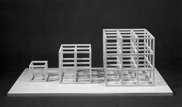

Approaching three dimensional work in a similar fashion, Lewitt focused more on the process of creating his works rather than the finished product. Because of this, Lewitt preferred to call these "structures" instead of the traditional term of sculpture.
 SOL LEWITT
SOL LEWITT